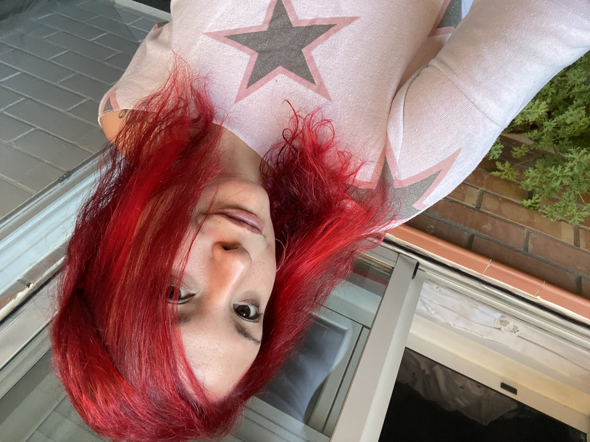
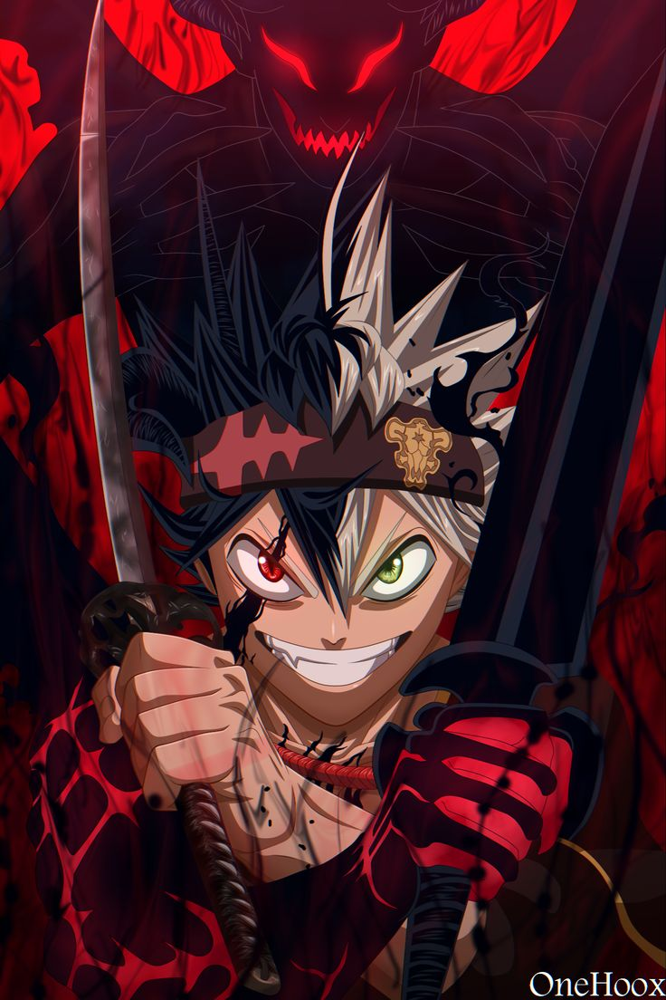
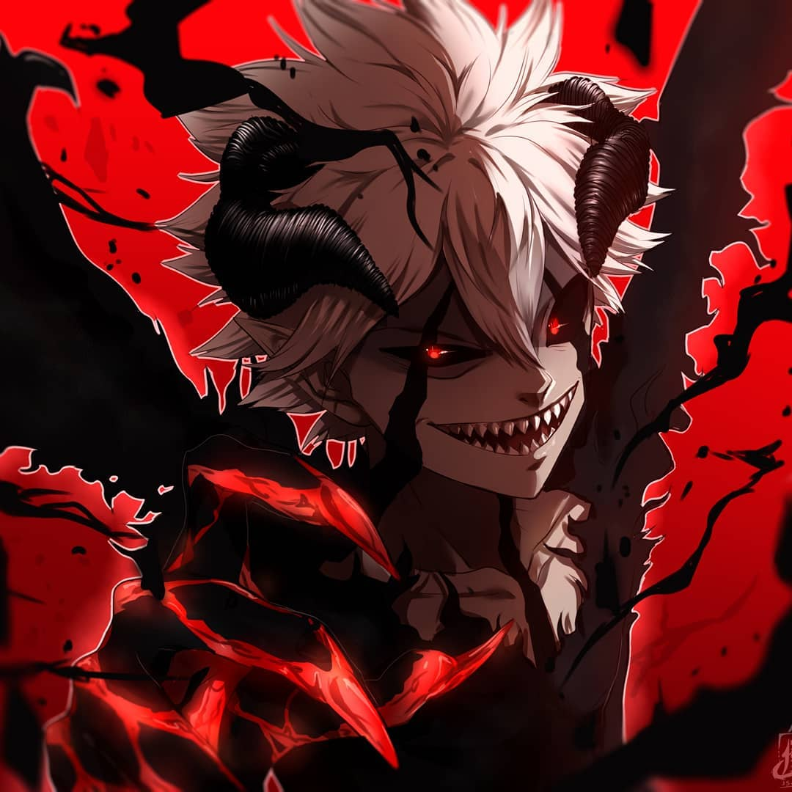
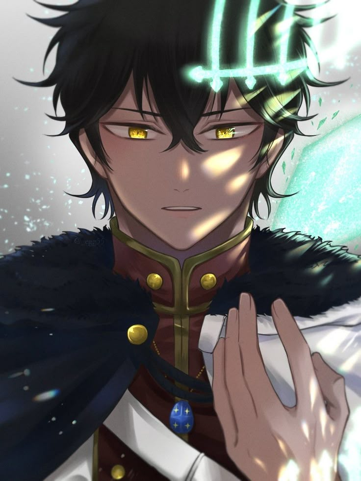

Hola soy Ross




Tengo 35 años, naci en Lleida, pero he vivido desde mi adolescencia en el Pais vasco. Me encanta la informatica, el manga. el techno y la musica punk, entre otras.
Mantenimiento y reparacion de pc, el dibujo tanto fisico como digital, la musica, y la animación japonesa
Dibujar, ir a caminar por la montaña, ir a nadar, entrenar perros
Black clover